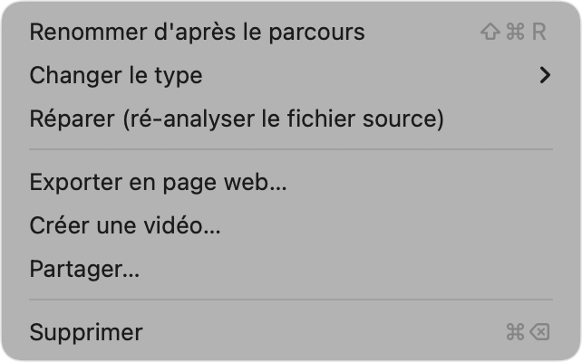
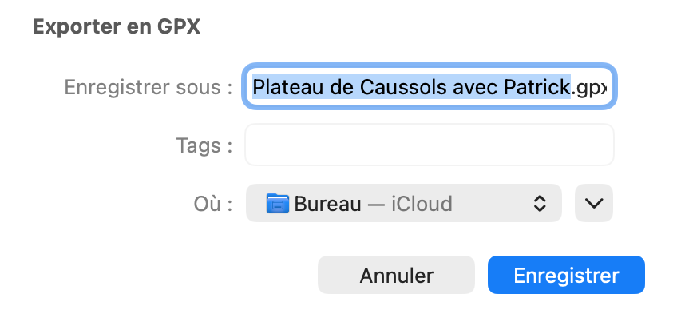
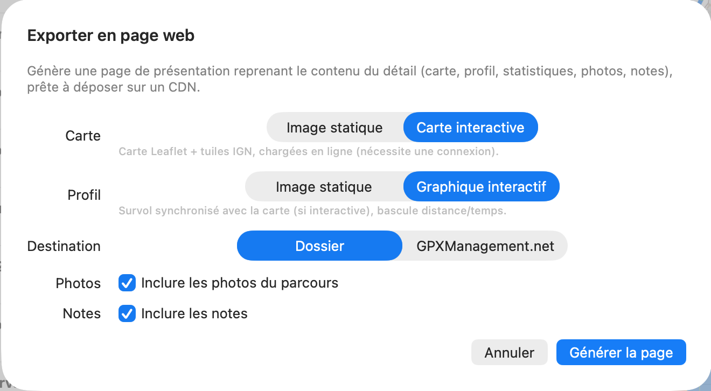
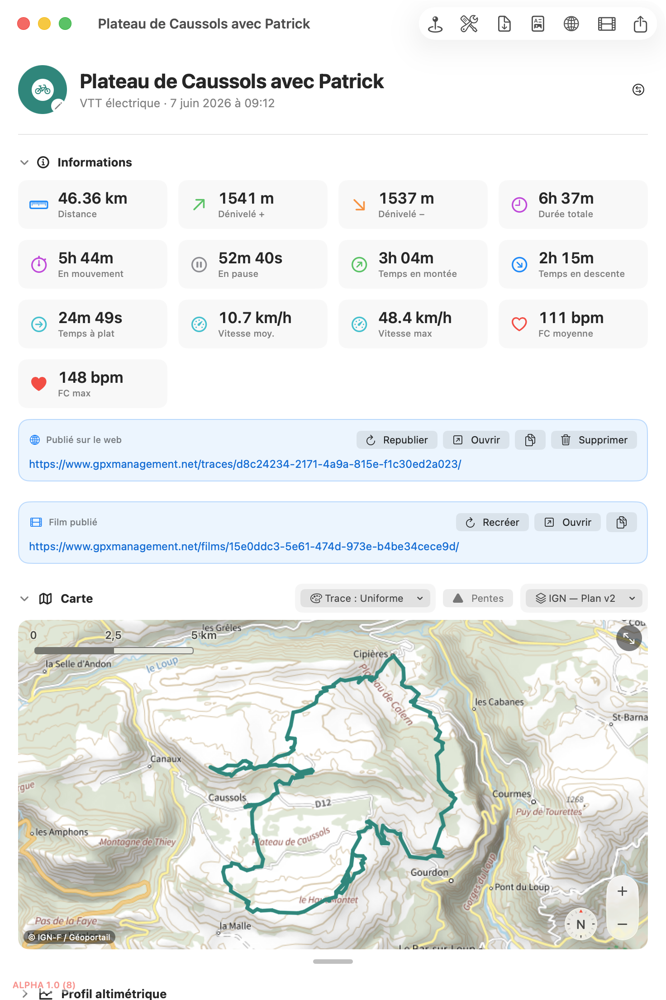

Cinq façons de sortir une trace de GPXManagement : le fichier GPX, un rapport PDF, une image de la carte, une page web (locale ou publiée en ligne), et le partage direct via macOS.
Où trouver les commandes
Depuis la fiche d'une sortie, les exports sont dans la barre d'outils (en haut à droite) : GPX, PDF, page web 🌐, vidéo 🎬 et partager ⬆︎. On retrouve les mêmes actions dans les menus Fichier (Exporter en GPX, en PDF, la carte en PNG) et Activité (page web, vidéo, partager).

📷 Capture à ajouter :aide/export-partage/img/etape-1.pngLes formats
Ré-exporte la trace au format GPX, compatible avec les autres applications (Garmin, Komoot, Strava…). Pratique après une édition (découpe, fusion). Bouton GPX de la barre d'outils, ou Fichier ▸ Exporter l'activité en GPX… (⌘E) ; une fenêtre vous demande l'emplacement.

📷 Capture à ajouter :aide/export-partage/img/etape-2.pngGénère un PDF d'une page reprenant la carte, le profil, les statistiques et les notes de la sortie — idéal à imprimer ou archiver. Bouton PDF, ou Fichier ▸ Exporter l'activité en PDF… (⌘⇧P).
Depuis la vue d'ensemble (carte globale), Fichier ▸ Exporter la carte en PNG propose « Exporter la vue » (le cadrage actuel) ou « Exporter tout le parcours » (recadré sur l'ensemble de la trace). Vous obtenez une image haute définition de la carte IGN avec le tracé.
Page web
Le bouton page web 🌐 ouvre « Exporter en page web » : une page de présentation qui reprend le contenu du détail (carte, profil, statistiques, photos, notes).

📷 Capture à ajouter :aide/export-partage/img/etape-5.pngEn Dossier, cliquez « Générer la page » : vous obtenez un dossier contenant index.html (et les images), prêt à ouvrir ou à déposer sur un hébergement. En GPXManagement.net, cliquez « Publier » : la page est mise en ligne et un encadré « Publié sur le web » apparaît dans la sortie, avec le lien et les boutons Ouvrir, Copier le lien, Republier (écrase la page existante au même lien) et Supprimer.

📷 Capture à ajouter :aide/export-partage/img/etape-6.pngPartager
Le bouton Partager ⬆︎ ouvre le menu de partage de macOS avec le fichier GPX de la sortie : envoyez-le par Mail, Messages, AirDrop, Notes… selon ce qui est installé sur votre Mac.